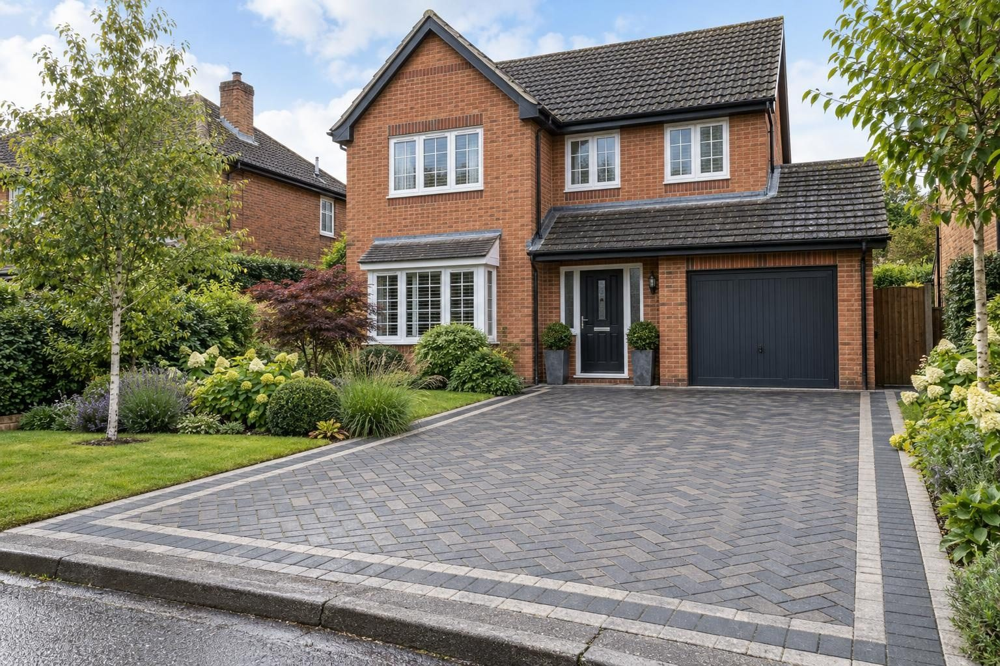
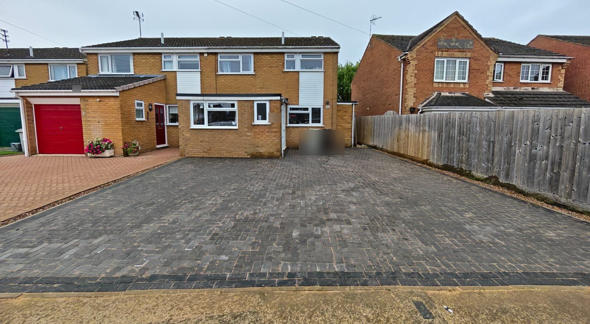
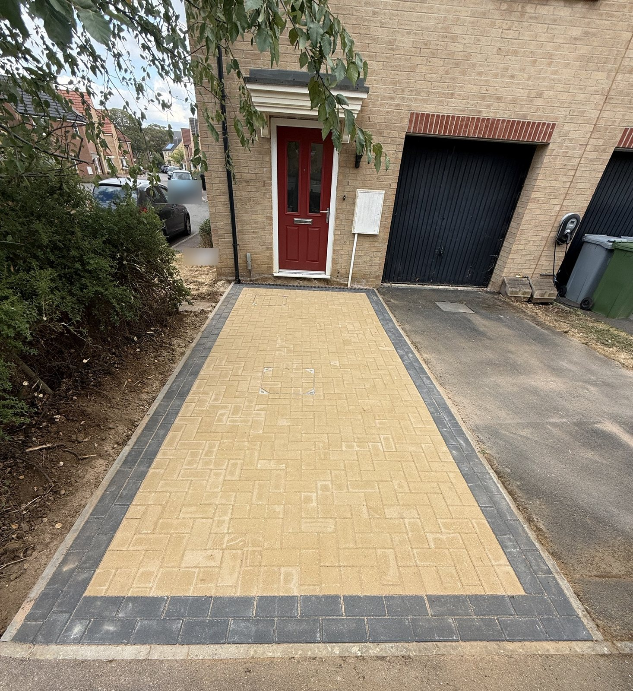
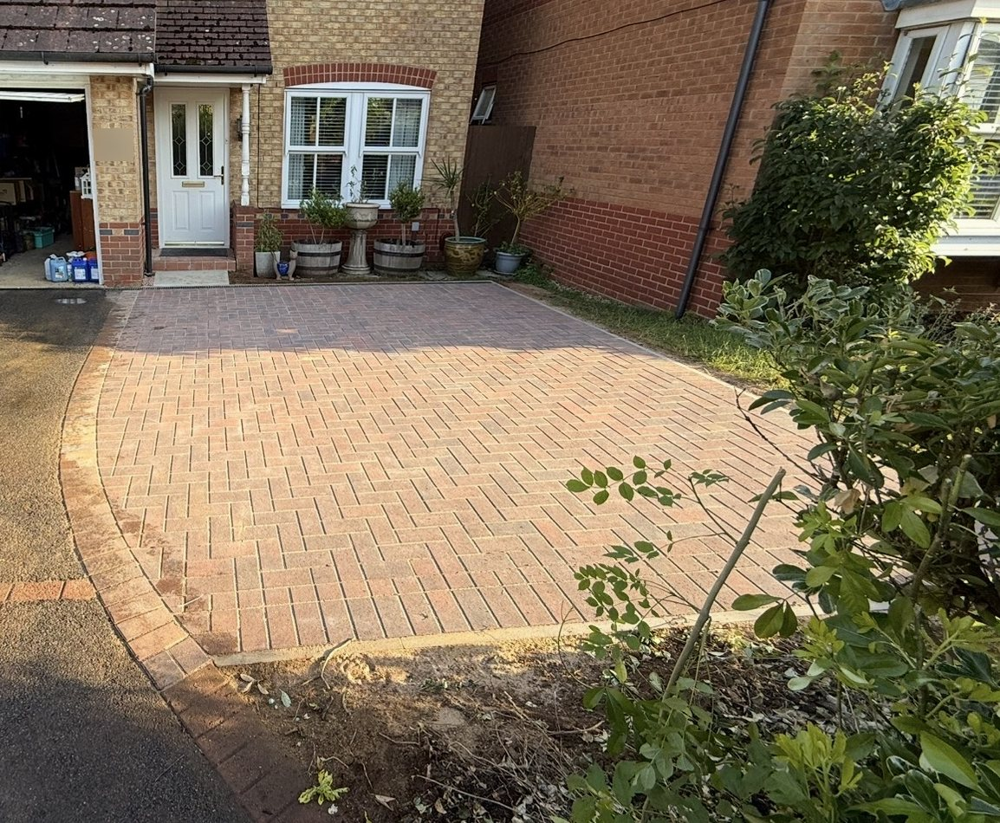

Driveways
Resin, block paving, tarmac and gravel driveways, built on a proper base with drainage designed in.
We build resin bound, block paved, tarmac and gravel driveways across Rutland, Stamford and the surrounding towns. As a guide, gravel is £60–£100 per m², tarmac £90–£130, block paving £120–£170 and resin bound £150–£220, all in.
- Gravel
- £60–£100 per m²
- Tarmac
- £90–£130 per m²
- Block paving
- £120–£170 per m²
- Resin bound
- £150–£220 per m²
Our 2026 guide prices, all in. Your fixed price comes in writing after the site visit. Council fees checked October 2026.
Driveway options


Drainage, gates, bin stores and repairs

Permeable driveways
No planning needed for the front garden.

Driveway drainage
Channel drains and soakaways for puddling drives.

Driveway gates
Sliding and swing gates, automated and safety-tested.

Bin stores
Fitted on a level base, from about £1,000.

Driveway repairs
Sunken blocks, failed edges and potholes.

Block paving cleaning
Cleaned, re-sanded and sealed.

Do I need planning for a driveway?
The 5m² front garden rule, Article 4 and dropped kerbs explained.
Planning and dropped kerbs by council
A front driveway needs no planning permission if it is permeable or drains to your own lawn or border; more than 5m² of impermeable surface draining to the road does (Planning Portal guidance). In the Stamford conservation area the Article 4 direction brings any new road-facing hard surface under planning control. A new or wider entrance also needs a dropped kerb, and the rules depend on the highway authority.
| Highway authority | Towns | Dropped kerb fee | Who builds it |
|---|---|---|---|
| Rutland County Council | Oakham, Uppingham, Ketton, Empingham, Cottesmore, Greetham, Langham, Whissendine, Ryhall, Edith Weston | £194 for the vehicle access permit | an accredited contractor under the council's permit (we can do it) |
| Lincolnshire County Council | Stamford | £300 for the council to build it, or £470 for a contractor | the county council, or an accredited contractor (we can do it) |
| Leicestershire County Council | Market Harborough, Great Bowden | £300 to apply (plus £240 if a contractor builds it) | the county council, or an accredited contractor (we can do it) |
| North Northamptonshire Council | Corby, Kettering, Weldon | £333 for the licence and inspection | an approved contractor (we can do it) |
Fees from each council's website, checked October 2026. See dropped kerbs for the process in each town.
Things people ask us
How much does a new driveway cost?
What is the cheapest type of driveway?
What is the best material for a driveway?
Which type of driveway lasts the longest?
What is the lowest maintenance driveway?
Do I need planning permission for a new driveway?
How big does a driveway for two cars need to be?
How long does it take to build a new driveway?
What is the best time of year to have a new driveway installed?
How deep should a driveway sub-base be?
What should a driveway quote include?
Can I use my car while a new driveway is being built?


Recent jobs like this

Block paved driveway and dropped kerb, Ryhall
Slabs and an old crossing replaced with a three-car block drive, channel drain and wider dropped kerb.

Charcoal block paved driveway, Oakham
A full-width charcoal herringbone drive with channel drains, built after a garage conversion at the same house.

Buff herringbone driveway, Oakham
An extra space beside a townhouse drive, in buff herringbone with a charcoal double border.

Block paved parking bay, Oakham
A tarmac drive widened with a herringbone block bay and a curved soldier-course edge.
Rated 5.0 from 37 Google reviews
“Great job from Lewis and his team adding drainage to an existing driveway. Professional job from start to finish, good communication all the way through, and just thought of everything in advance so everything went very smoothly. Top job by a top bloke.”
Gordon · Drainage for an existing driveway — Google review
“Lewis, Connor and the team at Rutland Driveways laid a new block paved driveway and parking area, and dropped Kerb at our house in Ryhall, from the offset, everything was professional, clearly explained and very detailed , right from Lewis quoting, the quote was very detailed and explained everything that was included, it was …”
Peter, Ryhall · Block paved driveway and dropped kerb — Google review
Request a site visit
We measure up, check levels and drainage, and send a written proposal with the build-up, the programme and one whole price. No pressure and no follow-up sales calls.